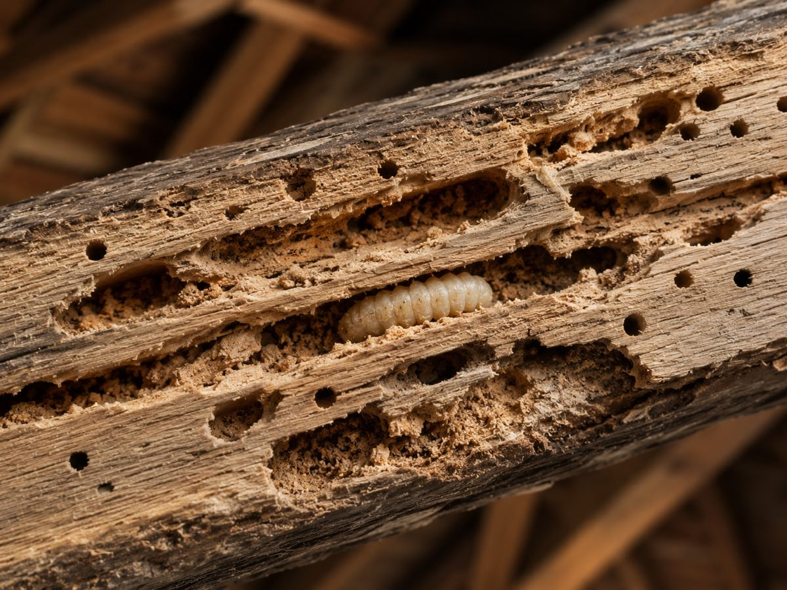

Vous avez remarqué un de ces signes chez vous ?
- Des trous ovales de 6 à 10 mm dans la charpente ou les poutres
- De la sciure ou de la vermoulure dans les combles
- Des bruits de grignotage dans le bois par temps calme
- Des galeries qui apparaissent sous la surface du bois
Un seul de ces signes suffit pour nous contacter : décrivez ce que vous voyez, le devis est gratuit et sans engagement.
Traitement capricorne des maisons : reconnaître et éliminer
Comment reconnaître le capricorne des maisons ?
- Trous de sortie ovales de 6 à 10 mm dans la charpente, les poutres ou les bois résineux
- Vermoulure et sciure au pied des pièces attaquées
- Bruits de grignotage nettement audibles, surtout la nuit et par temps calme : les larves du capricorne creusent bruyamment
- Galeries ovales sous la surface du bois, remplies de sciure tassée
Le capricorne des maisons vise en priorité les bois résineux : charpentes en pin, sapin ou épicéa. Le pin maritime, omniprésent autour du Bassin d'Arcachon, en fait une des zones les plus exposées de France.

Le capricorne, est-ce dangereux pour la charpente ?
C'est l'insecte xylophage le plus destructeur pour les charpentes. Sa larve creuse le bois pendant 3 à 10 ans avant de devenir adulte : pendant tout ce temps, elle vide les poutres de l'intérieur sans signe visible. Une charpente fortement attaquée peut perdre sa capacité portante, avec un risque réel d'affaissement. Ce bruit de grignotement que vous entendez, ce sont des larves en train de creuser : chaque jour compte.
Un doute suffit pour faire vérifier. Notre technicien confirme la présence du capricorne, mesure l'étendue des dégâts et vous propose le traitement capricorne bois adapté.
Notre traitement capricorne, étape par étape
- 1. Visite technique : sondage de la charpente, recherche d'activité larvaire
- 2. Bûchage des parties vermoulues pour retrouver le bois sain
- 3. Injection en profondeur du produit certifié dans les pièces de structure, puis pulvérisation de surface
- 4. Garantie et suivi : garantie de résultat, contrôle dans le temps
Traitement capricorne : quel tarif ?
Le tarif d'un traitement capricorne dépend de l'étendue de l'infestation et du volume de charpente : un traitement par injection démarre à partir de 1 500 €. C'est environ dix fois moins cher que remplacer une charpente. Devis gratuit, précis et sans engagement.
Une entreprise anti-capricornes de confiance en Gironde
LSR Habitat est une entreprise familiale spécialisée dans le traitement du capricorne des maisons et des insectes du bois en Gironde. Sans sous-traitance, produits certifiés, garantie de résultat, 5,0/5 sur 19 avis Google. Intervention dans toute l'Aquitaine, depuis notre base de Gironde.